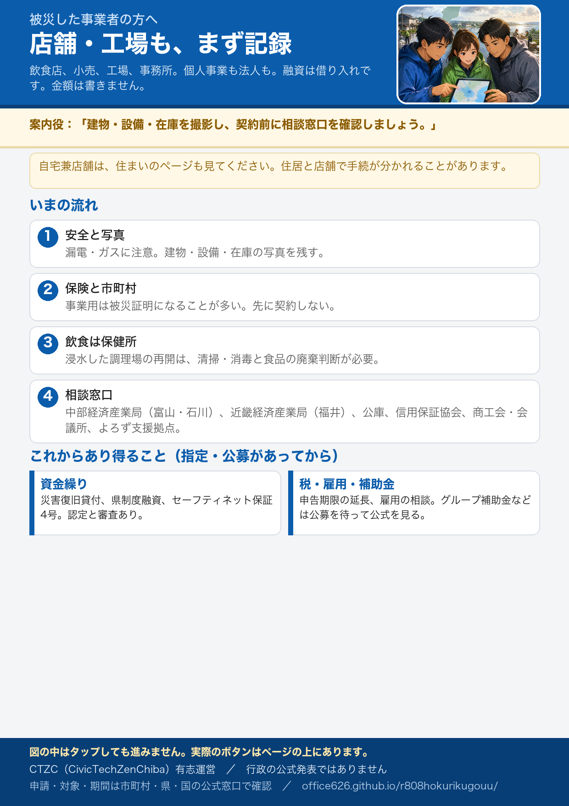

被災した事業者の方へ
飲食店・小売・工場・事務所など、事業用の施設や設備が被災した方向けの案内です。有志運営であり申請窓口ではありません。対象・期間・受付開始は公式で確認してください。金額は書きません。適用可否は各実施機関の判断です。
このページの対象
店舗を開いている方、工場や倉庫、事業所です。個人事業も法人も含みます。
- 自宅の一部が店舗や作業場になっている場合は、住まいが被災した方の案内も合わせて見てください。住まいと事業では、証明書の種類が違うことがあります。
- このサイトに、個店の営業再開リストは作りません。再開の可否は保健所・市町村・各店の公式へ。
いますぐやること
片付けや修理の契約の前に、記録と安全の確認が先です。写真はサイトに送らないでください。
- 危険な場所に入らない。 漏電、ガス、床下の泥、天井の落下に注意。電気・ガスは事業者の公式案内に従う。
- 被害が分かる写真を撮る。 建物の外観、浸水の高さ、設備・在庫・車両。全体と寄りの両方。日付が分かるように残す。
- 保険・共済に連絡する。 火災保険の水災、店舗総合、自動車、小規模企業共済など、契約ごとに窓口が違います。
- 市町村の商工担当と、証明書の案内を見る。 事業用の建物は、住まいの罹災証明ではなく、被災証明（被災届出）になる市町村が多いです。先に業者と契約して自己負担すると、後から公費の補助が受けられない場合があります。
- 飲食・食品製造は保健所へ。 浸水した調理場は、清掃・消毒と食品の廃棄の判断が必要です。再開前に管轄保健所へ相談してください。
- 浸水した家屋の感染症対策（厚生労働省。作業時の注意） 行政
- 北陸電力 停電情報 公式
- 電気・ガス・水道・道路の公式リンク（このサイト）
- 市町村の申請案内を探す（このサイト）
住まいの証明と、事業の証明
呼び方は市町村で違います。申請先は事業所がある市町村です。
- 住まい（生活の拠点）は、罹災証明書が中心になることが多いです。
- 店舗・工場・車庫・事業用設備は、被災証明書や被災届出になることが多いです。融資・保証・保険の提出先が求める書類を、窓口で確認してください。
- 同じ建物でも、住居部分と店舗部分で別の手続になることがあります。
いま相談できる窓口（公式）
令和8年8月27日からの大雨について、国の出先は特別相談窓口を置いています。最新の対象市町と措置はリンク先で確認してください。
- 中部経済産業局 災害・防災関連情報（富山県・石川県が管内。特別相談窓口の案内あり） 行政
- 近畿経済産業局（福井県が管内） 行政
- 中小企業庁 災害関連情報 行政
- 中小企業基盤整備機構（特別相談・小規模企業共済の災害時貸付けなどの発表を確認） 行政
- オンライン経営相談（E-SODAN）（中小機構） 行政
いま動いている県の制度
市町村の事業者向け窓口
これから受けられる可能性のある支援
災害救助法は応急の住まい・生活が中心です。事業者向けは、別の融資・保証・税・雇用の制度が動くことがあります。いま「必ずもらえる」と書いてあるわけではありません。指定・公募・認定があってから使えるものが多いです。
- 資金繰りの相談。 日本政策金融公庫の災害復旧貸付、商工中金、県の制度融資、信用保証。金融機関の審査があります。
- 市区町村の認定が要る保証。 セーフティネット保証4号（自然災害）は、国が地域を指定したうえで、本店所在地の市町村で認定を受ける流れです。指定の有無は中小企業庁・市町村公式。
- 共済の契約者向け貸付け。 小規模企業共済に入っている場合、災害救助法の適用地域などで災害時貸付けが案内されることがあります。中小機構の発表を確認。
- 税の申告・納付の期限。 広い地域指定が出る場合と、税務署へ個別に延長を申請する場合があります。自動で延びたと決めつけないでください。
- 雇用。 休業や出勤困難が続く場合、雇用保険・雇用調整助成金の扱いは労働局・ハローワークへ。特例が出るかどうかは公式。
- 施設の復旧補助金。 いわゆるグループ補助金などは、激甚災害の指定や国・県の公募があってから動くことが多いです。現時点でこのサイトに「出る」とは書きません。経産局と中小企業庁の災害ページを定期的に見てください。
- 災害復旧貸付（日本政策金融公庫） 公式
- 商工組合中央金庫 公式
- セーフティネット保証制度（4号）（中小企業庁） 行政
- セーフティネット保証の概要（中小企業庁） 行政
- 災害等による申告・納付期限の延長（国税庁） 行政
- 国税庁 災害関連情報 行政
- 雇用調整助成金（厚生労働省。特例の有無は公式） 行政
飲食店・工場で特に確認してほしいこと
- 飲食・食品製造： 汚水が触れた食品、停電で温度管理できなかった要冷蔵・要冷凍の食品は廃棄が原則、と県は案内しています。井戸水は水質の確認。再開は管轄保健所。
- 工場・倉庫： 機械の通電はメーカーや電気保安の判断を優先。産業廃棄物の出し方は市町村の災害ごみ案内へ。
- 農業・漁業： 日本政策金融公庫の農林水産事業や、県の農林水産部の公式を確認してください。このページの中心は商工業です。
- 日本政策金融公庫 農林水産事業 公式
- 災害廃棄物対策情報サイト（環境省。出し方は市町村公式） 行政
注意してほしいこと
- 先に直してしまうと、後の補助の対象外になり得ます。 急いで営業を再開したい気持ちは当然です。公費を使いたい場合は記録を残し、公式の受付を確認してから動く方が安全です。
- 便乗商法に注意。 急かして契約させる、「補助金で無料になる」と断言する業者には、消費生活センターへ。
- 融資は借り入れです。 保証や貸付けは返済が前提です。条件は窓口で確認してください。
- 市町村の商工課の案内はこれから増えることがあります。 「石川・富山・福井にお住まいの方へ」の市町村検索と、各公式を何度か見に行ってください。
- 証明書の判定に納得できないときは、再調査を頼めることがあります。 被害の程度は現地調査で決まります。判定が実態と違うと感じたら、市町村の窓口に再調査の依頼ができるか聞いてください。受付の期限がある市町村もあります。
- 保険・共済の請求には期限があります。 契約ごとに違うので、被害の写真がそろった段階で契約先に期限を確認してください。
- 災害に便乗した悪質商法に注意（消費者庁） 行政
